library(tidyverse)## ── Attaching packages ─────────────── tidyverse 1.3.0 ──## ✓ ggplot2 3.3.2 ✓ purrr 0.3.4
## ✓ tibble 3.0.3 ✓ dplyr 1.0.2
## ✓ tidyr 1.1.2 ✓ stringr 1.4.0
## ✓ readr 1.3.1 ✓ forcats 0.5.0## ── Conflicts ────────────────── tidyverse_conflicts() ──
## x dplyr::filter() masks stats::filter()
## x dplyr::lag() masks stats::lag()library(dplyr)
library(readxl)
library(stringr)
county = read_csv('./data/countypres_2000-2016.csv')## Parsed with column specification:
## cols(
## year = col_double(),
## state = col_character(),
## state_po = col_character(),
## county = col_character(),
## FIPS = col_double(),
## office = col_character(),
## candidate = col_character(),
## party = col_character(),
## candidatevotes = col_double(),
## totalvotes = col_double(),
## version = col_double()
## )unemployment = read_excel('./data/Unemployment.xls')## New names:
## * `` -> ...2
## * `` -> ...3
## * `` -> ...4
## * `` -> ...5
## * `` -> ...6
## * ...unemployment = unemployment %>% slice(7:n())colnames(unemployment) = unemployment[1,]
unemployment = unemployment[-1,]#Task One: Done in Python#
(i) proportion of the vote won by either Democartic or Republican candidate
import pandas as pd
county = pd.read_csv('./data/countypres_2000-2016.csv')
unemployment = pd.read_excel('./data/Unemployment.xls')##to get the elections percent firstly##
unemployment = unemployment[6:]
unemployment.columns = unemployment.iloc[0]
unemployment = unemployment.drop(unemployment.index[0])
unemployment.reset_index(inplace=True)
vote_percent_df = county.groupby(['state_po','county','party','year']).apply(lambda g: g.candidatevotes/g.totalvotes)
vote_percent_df = vote_percent_df.reset_index().drop('level_4',axis=1)
vote_percent_df.rename(columns={ vote_percent_df.columns[-1]: "vote_percent" }, inplace = True)vote_percent_df = vote_percent_df.loc[(vote_percent_df['year'] >= 2008) & (vote_percent_df['party'] == 'democrat')]
vote_percent_df.reset_index(drop=True,inplace=True)##Then to get the unemployment rates## ### There are several rows needed to be moved like area_name = ‘United States’ etc###
unemployment = unemployment[unemployment['Rural_urban_continuum_code_2013'].notna()]
selected_column = ['area_name','Unemployment_rate_2008','Unemployment_rate_2012','Unemployment_rate_2016']
selected_unemployment = unemployment[selected_column].reset_index(drop=True)selected_unemployment[['State','County']] = selected_unemployment['area_name'].str.split(',',expand=True)
selected_unemployment.drop('area_name',inplace=True,axis=1)
selected_unemployment## 6 Unemployment_rate_2008 Unemployment_rate_2012 ... State County
## 0 5.1 6.9 ... Autauga County AL
## 1 4.6 7.5 ... Baldwin County AL
## 2 8.8 11.5 ... Barbour County AL
## 3 5.8 8.5 ... Bibb County AL
## 4 4.7 6.9 ... Blount County AL
## ... ... ... ... ... ...
## 3214 13.2 16 ... Vega Baja Municipio PR
## 3215 12.5 12.9 ... Vieques Municipio PR
## 3216 13.8 20.8 ... Villalba Municipio PR
## 3217 18.1 23.3 ... Yabucoa Municipio PR
## 3218 13.1 20.7 ... Yauco Municipio PR
##
## [3219 rows x 5 columns]selected_unemployment.columns = ['2008','2012','2016','State','County']
selected_unemployment## 2008 2012 2016 State County
## 0 5.1 6.9 5.1 Autauga County AL
## 1 4.6 7.5 5.3 Baldwin County AL
## 2 8.8 11.5 8.3 Barbour County AL
## 3 5.8 8.5 6.4 Bibb County AL
## 4 4.7 6.9 5.4 Blount County AL
## ... ... ... ... ... ...
## 3214 13.2 16 13.9 Vega Baja Municipio PR
## 3215 12.5 12.9 10.6 Vieques Municipio PR
## 3216 13.8 20.8 20.2 Villalba Municipio PR
## 3217 18.1 23.3 16.9 Yabucoa Municipio PR
## 3218 13.1 20.7 18.8 Yauco Municipio PR
##
## [3219 rows x 5 columns]#Task Two: Done in R:
##(i) Proportion of vote won
selected_county = county %>% group_by(year,state_po,party,county) %>% mutate(percent = candidatevotes/totalvotes) %>% select(year,state_po,FIPS,county,party,percent)
selected_county = na.omit(selected_county[selected_county$party == 'democrat',])
selected_county$FIPS = str_pad(selected_county$FIPS,max(nchar(selected_county$FIPS)),side="left", pad="0")
selected_county = selected_county %>% filter(year >= 2008)selected_column = c('FIPStxt','area_name','Unemployment_rate_2008','Unemployment_rate_2012','Unemployment_rate_2016')
selected_unemployment = unemployment[selected_column]
selected_unemployment = na.omit(selected_unemployment %>% separate(area_name,c('County','State'),','))## Warning: Expected 2 pieces. Missing pieces filled with `NA` in 54 rows [1, 2,
## 70, 103, 119, 195, 254, 319, 328, 332, 333, 334, 402, 562, 567, 612, 715, 808,
## 908, 1014, ...].library(sf)## Linking to GEOS 3.8.1, GDAL 3.1.1, PROJ 6.3.1library(tmap)
library(tmaptools)usgeo <- read_sf('./data/tl_2019_us_county-1/tl_2019_us_county.shp')texas_geo <- filter(usgeo,STATEFP=='48')
qtm(texas_geo)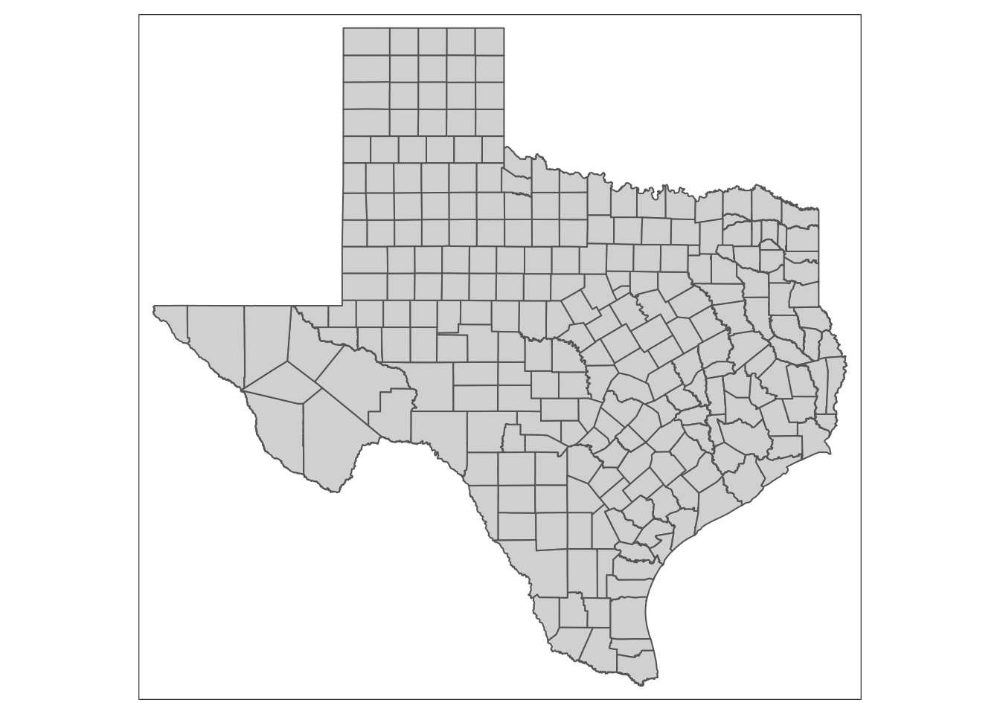 ### Then we can draw the percent of vote in texas###
texas_geo$NAME <- as.character(texas_geo$NAME)
texas_map <- left_join(texas_geo, selected_county,by=c("GEOID"="FIPS"))
tx_plot = tm_shape(texas_map) +
tm_fill("percent", title="percent of votes for democrat in Texas", palette = "PRGn") +
tm_borders(alpha=.5) +
tm_style('classic') +
tm_facets(by=c('year'),ncol=1) +
tm_layout(main.title = 'Percent of votes for democrat in Texas',main.title.size=1,legend.outside = TRUE)
tx_plot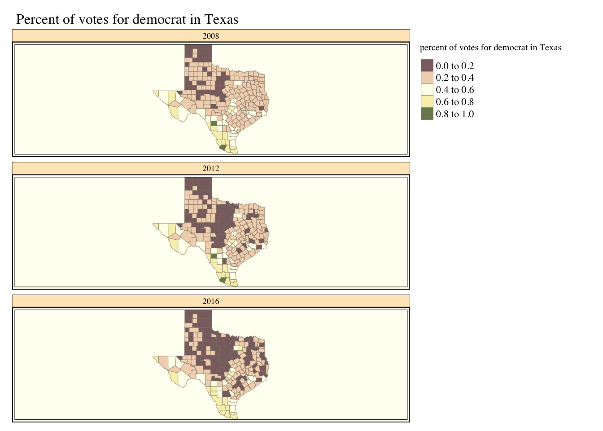
ca_geo <- filter(usgeo,STATEFP=='06')
qtm(ca_geo)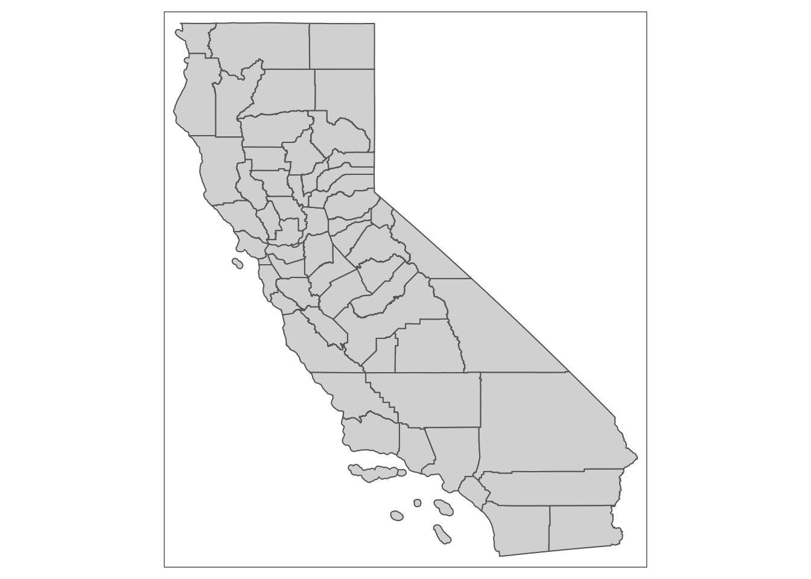
ca_geo$NAME <- as.character(ca_geo$NAME)
ca_map <- left_join(ca_geo, selected_county,by=c("GEOID"="FIPS"))
ca_plot = tm_shape(ca_map) +
tm_fill("percent", title="percent of votes for democrat in Calidornia", palette = "PRGn") +
tm_borders(alpha=.5) +
tm_facets(by=c('year'),ncol=1) +
tm_style('classic') +
tm_layout(main.title = 'Percent of votes for democrat in California',main.title.size=1,legend.outside = TRUE)
ca_plot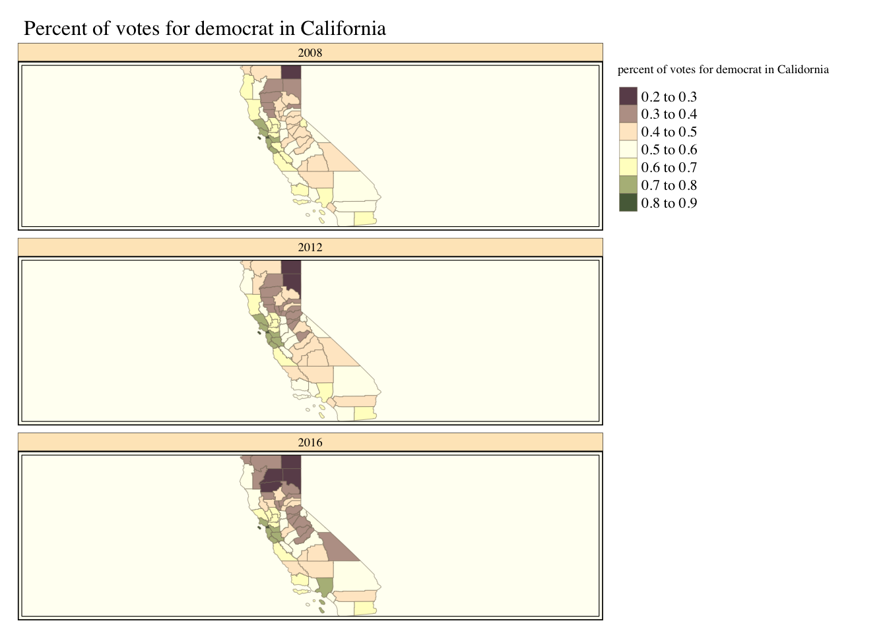
penn_geo <- filter(usgeo,STATEFP=='42')
qtm(penn_geo)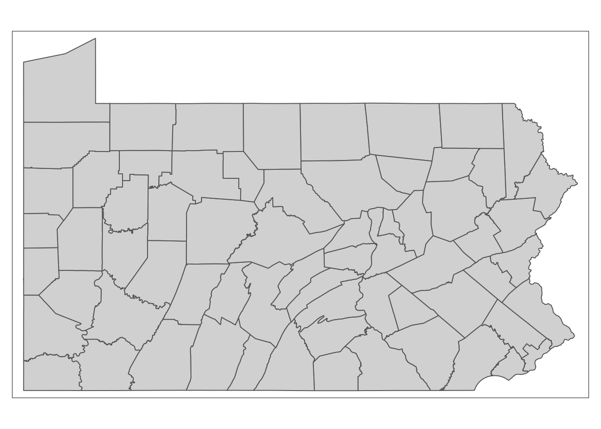
penn_geo$NAME <- as.character(penn_geo$NAME)
penn_map <- left_join(penn_geo, selected_county,by=c("GEOID"="FIPS"))
penn_plot = tm_shape(penn_map) +
tm_fill("percent", title="percent of votes for democrat in Pennsylvania", palette = "PRGn") +
tm_facets(by=c('year'),ncol=1) +
tm_borders(alpha=.5) +
tm_style('classic') +
tm_layout(main.title = 'Percent of votes for democrat in Pennsylvania',main.title.size=1,legend.outside = TRUE)
penn_plot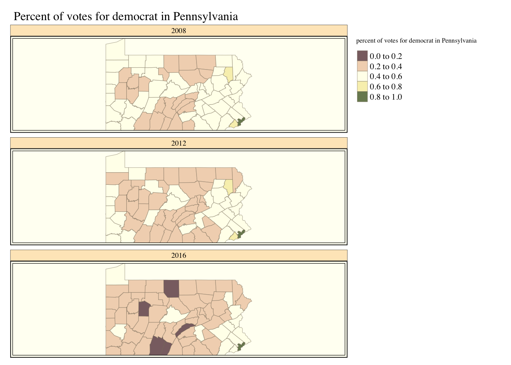
##Task 2: draw for Unemployment Rate##
library(tidyr)
selected_unemployment = pivot_longer(selected_unemployment, cols=4:6, names_to = "year", values_to = "Unemployment Rate")
selected_unemployment$year = substr(selected_unemployment$year,19,23)
selected_unemployment$year = as.numeric(selected_unemployment$year)texas_map <- left_join(texas_geo, selected_unemployment,by=c("GEOID"="FIPStxt"))
texas_map$`Unemployment Rate` <- as.numeric(texas_map$`Unemployment Rate`)
tx_un_plot = tm_shape(texas_map) +
tm_fill('Unemployment Rate', title="Unemployment Rate in Texas(%)", palette = "PRGn") +
tm_borders(alpha=.5) +
tm_style('classic') +
tm_facets(by=c('year'),ncol=1) +
tm_layout(main.title = 'Unemployment rate in Texas',main.title.size=1,legend.outside = TRUE)
tx_un_plot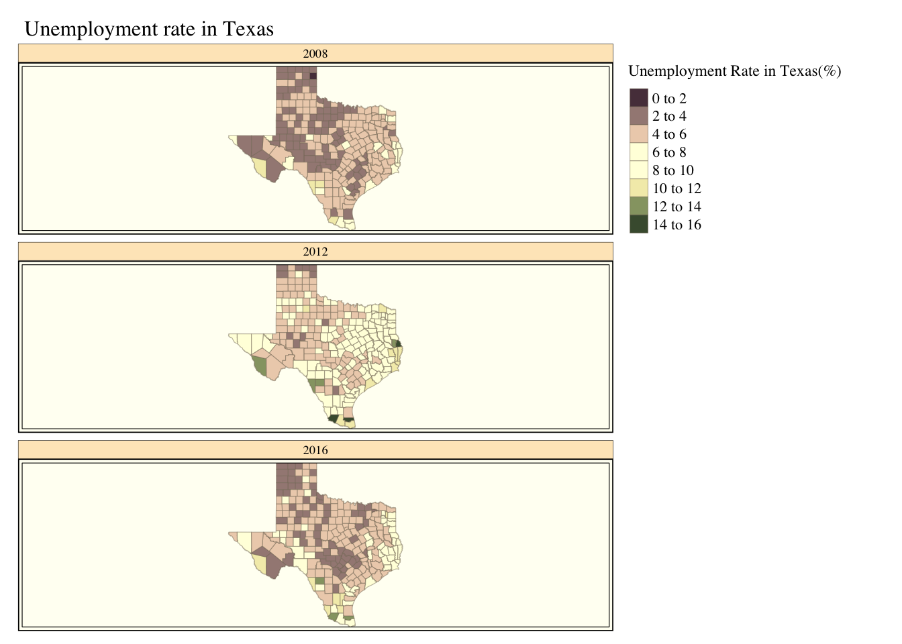
ca_map <- left_join(ca_geo, selected_unemployment,by=c("GEOID"="FIPStxt"))
ca_map$`Unemployment Rate` <- as.numeric(ca_map$`Unemployment Rate`)
ca_un_plot = tm_shape(ca_map) +
tm_fill('Unemployment Rate', title="Unemployment Rate in California(%)", palette = "PRGn") +
tm_borders(alpha=.5) +
tm_style('classic') +
tm_facets(by=c('year'),ncol=1) +
tm_layout(main.title = 'Unemployment rate in California',main.title.size=1,legend.outside = TRUE)
ca_un_plot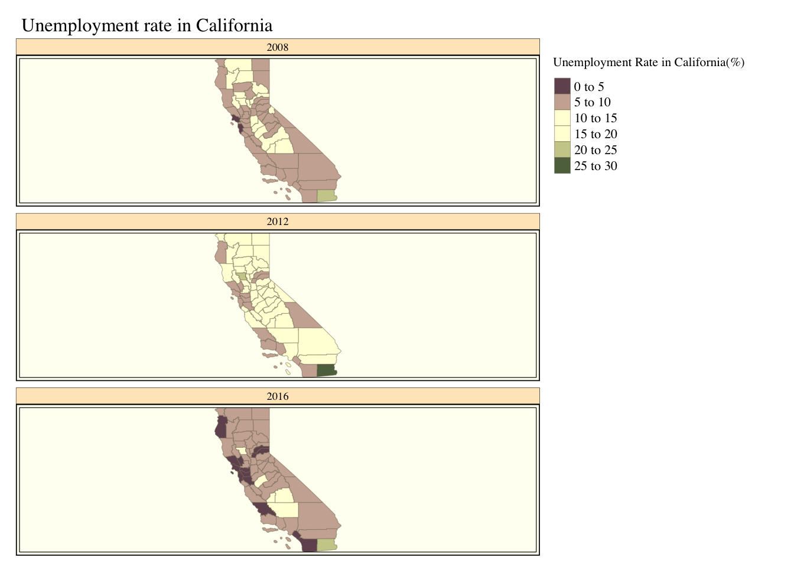
penn_geo$NAME <- as.character(penn_geo$NAME)
penn_map <- left_join(penn_geo, selected_unemployment,by=c("GEOID"="FIPStxt"))
penn_map$`Unemployment Rate` <- as.numeric(penn_map$`Unemployment Rate`)
penn_un_plot = tm_shape(penn_map) +
tm_fill("Unemployment Rate", title="Unemployment Rate in Pennsylvania(%)", palette = "PRGn") +
tm_facets(by=c('year'),ncol=1) +
tm_borders(alpha=.5) +
tm_style('classic') +
tm_layout(main.title = 'Unemployment Rate in Pennsylvania',main.title.size=1,legend.outside = TRUE)
penn_un_plot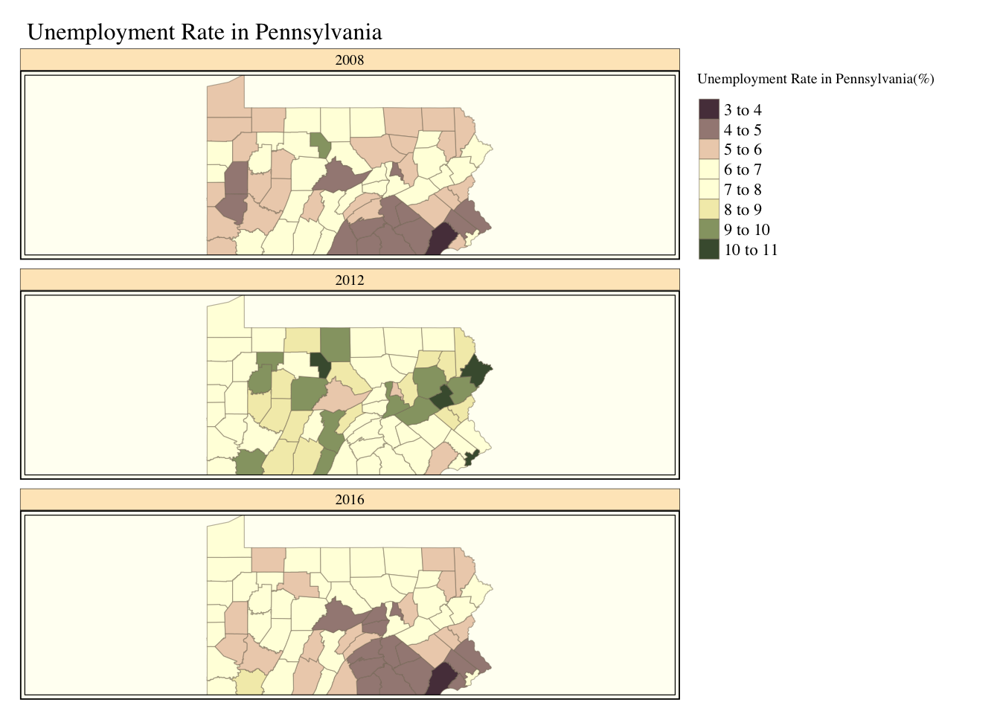
current.mode <- tmap_mode('plot')## tmap mode set to plottingtmap_arrange(penn_plot,penn_un_plot,widths = c(1,1))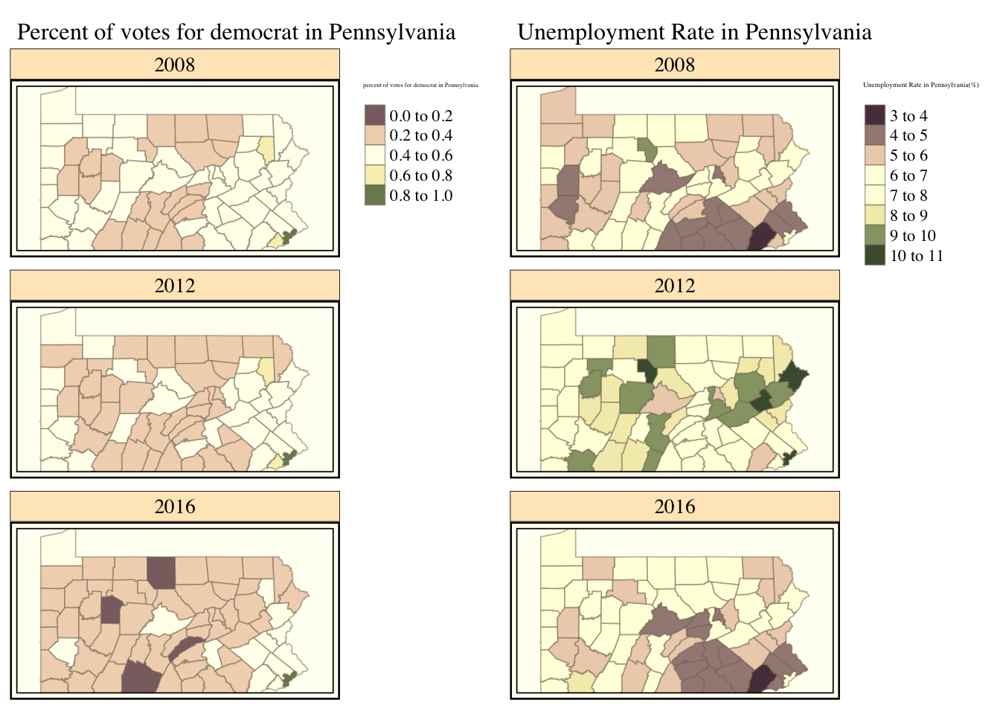
tmap_mode(current.mode)## tmap mode set to plottingcurrent.mode <- tmap_mode('plot')## tmap mode set to plottingtmap_arrange(tx_plot,tx_un_plot,widths = c(1,1))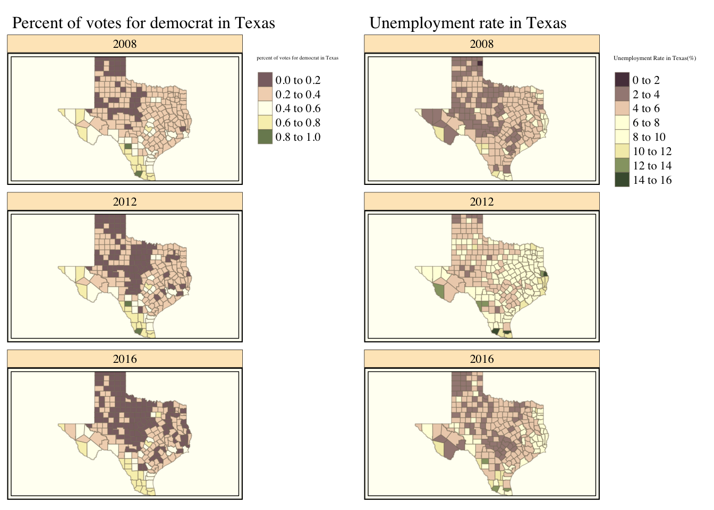
tmap_mode(current.mode)## tmap mode set to plottingcurrent.mode <- tmap_mode('plot')## tmap mode set to plottingtmap_arrange(ca_plot,ca_un_plot,widths = c(1,1))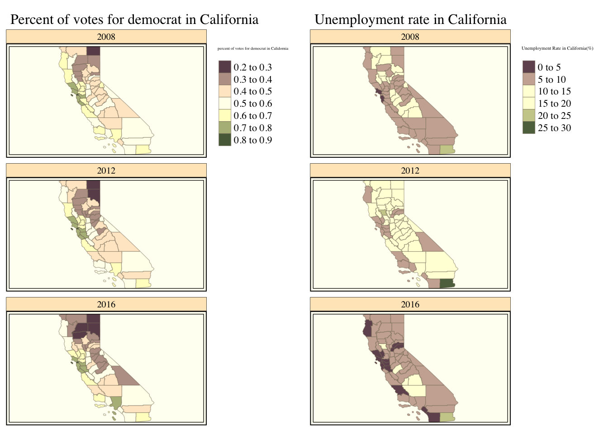
tmap_mode(current.mode)## tmap mode set to plotting